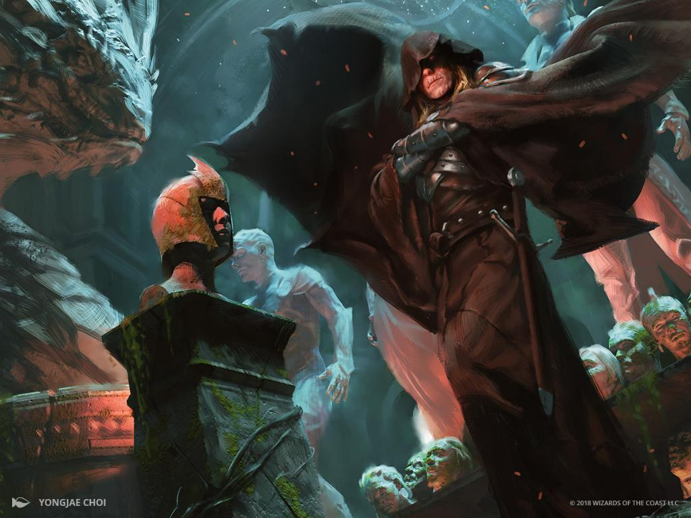

World of Ravnica
Ao se aproximar daquela senhora indefesa com o intuito de ajudar a salvar uma pobre vida,
não imaginava o perigo que lhe aguardava ali. Sem tempo de reação foi esfaqueado covardemente por
Lazav, o Mentor Dimir.
E esse foi o cruel fim desse soldado Boros.
não tinha como saber da armadilha, ou só foi imprudente ao pensar que um local disputado por guildas diferentes
fosse um lugar onde a compaixão é necessária, um deslize custou sua vida.
